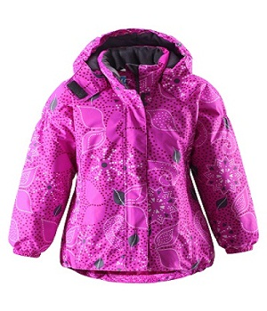

VitaLina+


Детская зимняя куртка Lassie, фуксия 128
СПЕЦИАЛЬНОЕ ПРЕДЛОЖЕНИЕ! 55,95 Старая цена 79,95 Сбережете 24,00 –30%
• Описание товара
Тёплая зимняя куртка отлично подойдёт для нашего климата, так как она изготовлена из водонепроницаемого и дышащего материала. Ваш ребёнок может спокойно играть в снегу, потому что куртка прочная и износостойкая Съёмный и регулируемый капюшон не только защищает от холодного ветра, но и безопасен во время игр на свежем воздухе! Плотные манжеты на резинке защитят от попадания снега в рукава. Сзади так же в области талии имеется резинка. Светоотражающие детали обеспечат видимость в темноте. Куртку можно сушить в сушильной машине. Температурный режим - от 0С до -30С: 0...-30C Воздухопроницаемость 3 000 г/м², водонепроницаемость 3 000 мм Материал: 100% полиэстер Lassie - производитель верхней одежды для детей. Это красивая, практичная и функциональная детская одежда и аксессуары. При любых капризах климата одежда Lassie обеспечит комфорт и защитит вашего ребёнка от ветра и холода. Одежда Lassie поможет отлично чувствовать себя в любую погоду.